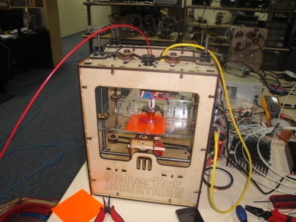
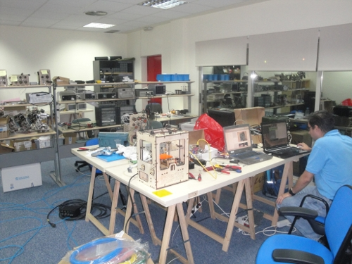
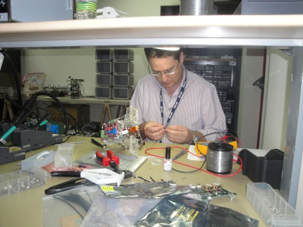
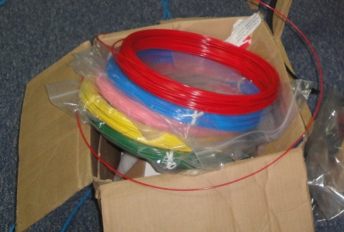
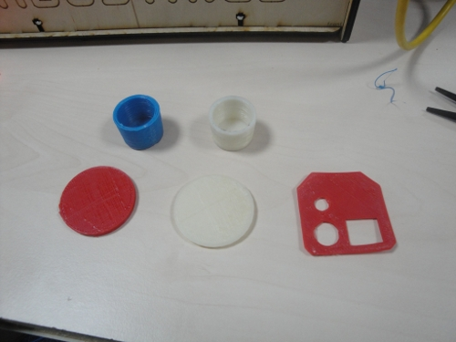

Nuestra impresora 3D estaba parada porque teníamos problemas con el extruder. Así que decidimos comprarnos la nueva versión: extruder MK4. Aunque el kit lo recibimos hace unos meses, hasta hace unas semanas no tuvimos tiempo de montarlo. Además, aprovechamos para comprar plástico ABS de colores (rosa, rojo, verde, azul y amarillo) y dos plataformas para sustituir a las antiguas de cartón pluma. Ahora imprimir es muchísimo más fácil!

El jueves 29 de Julio quedamos Andrés y yo en los cuarteles generales de Flir, a las 20:00 para montar el nuevo extruder y hacer pruebas. Estuvimos frikenado hasta las 5:00 de la mañana.

En esta foto podéis ver los rollos de plásticos de colores:

Y aquí algunas de las piezas que imprimimos: vasos de chupito, fichas de casino y una pieza diseñada por Andrés para colocarse en una cámara.

Es impresionante cómo evolucionan las tecnologías open-source. Desde la última vez que usamos la impresa, hay muchas novedades. El software es mucho más usable y potente. La mecánica ha mejorado un montón y sobre todo, hay muchas más piezas para imprimir. No deja de asombrarme cómo crece el conocimiento que se genera en las comunidades abiertas.
Que ganas de probarla!!!!!!!!!!!!!